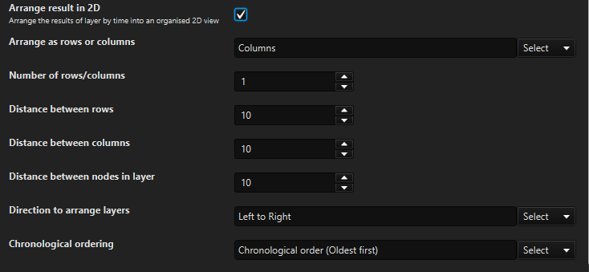
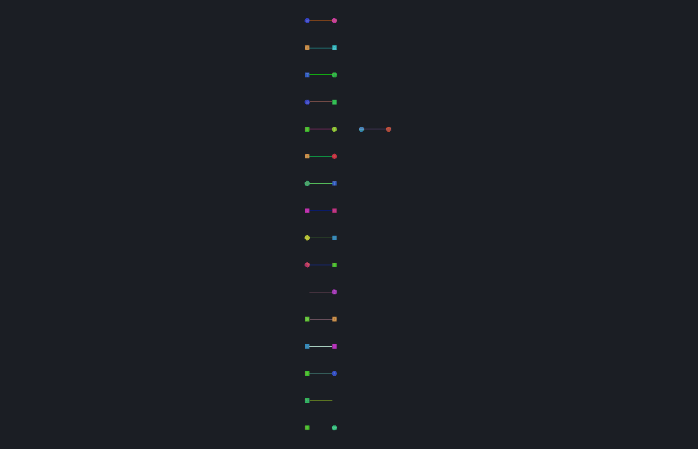
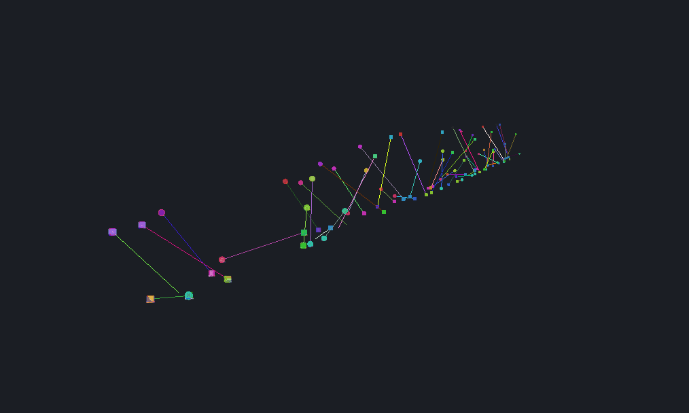
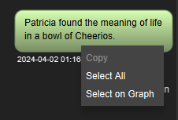
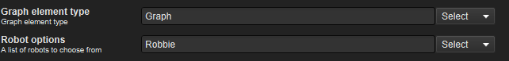

What's new in Constellation v3.4
The main focus of this release has been to fix many bugs previously found that should make Constellation more stable and performant, as well as a few new features.
Here is a list of changes we’ve added to this version of Constellation.
2D View Option for Layer by Time
The Layer by Time arrangement has been updated to enable the option of arranging in 2D, as an alternate to the default 3D. By checking the Arrange result in 2D checkbox, a handful of other options appear which allow for customisation of how the 2D arrangement is created.
The Layer by Time arrangement can be found under Arrange -> Layer by Time.

|
 |
 |
Added Help Tooltips to the Data Access View Plugins
The plugins in the Data Access View are not always the most obvious in what their functions are from the names, so additional tooltips have been added to help describe what each of them do. These tooltips provide a quick way to learn the description of a plugin by hovering over the plugin. More detailed descriptions of the plugins are still available on the help pages which can be accessed via the ? buttons.
Map View Fixes
Several issues in the Map View have been resolved in this version of Constellation. Previously, moving the Map View between its own floating window and docking it into the main Constellation window would cause the map to reset, zooming in on Australia. Additionally, the Map View used to reset to the Default Map whenever the view was resized and would often shake when zooming in on the map. These have all been fixed now, resulting in a much smoother user experience.
Conversation View Right Click Menu Restored
In earlier versions of Constellation, a context menu popped up when right clicking on one of the conversation bubbles in the Conversation View. This menu has now been restored, and it allows for the messages to be selected and then easily copied out of Constellation if needed.

New Single Choice Dropdowns
The single choice dropdowns have had their look and feel updated to match the look and feel of the multi choice dropdowns. This is the beginning of work being done to uplift the look of all the different input fields in Constellation so that they all have a cohesive size, look and feel. This work is being done for each input type individually, so the changes will be gradual over the next releases.

Performance Improvements
As a part of this release, some general performance improvements have been made. The arrangements have had the code optimised to be more streamlined and the layout of some arrangements have been updated, which has significantly improved the performance. The processes being run at startup have been reviewed with the aim of speeding up the startup time for Constellation. The spellchecker has also been improved; visible lag has been noticeably reduced when typing large amounts of text.
Several Bug Fixes
Numerous bug fixes have also been made including:
- Fixed exceptions caused when dragging on the Histogram View
- Updated Quality Control View dialogs for Dark Mode
- Fixed inconsistencies with the generation of nodes and transactions
- Updated ‘Boolean or Null’ Attributes to be editable in the Attribute Editor
Want to know more?
You can find out more information about the latest updates on the What's new page once you have installed version 3.4. There's loads of extra details available in the Release Notes and Change Log.
Would you like to learn more about how Constellation works?
There is a training package available on GitHub to learn how to make the most use of the various features in Constellation. There is also developer training for those seeking to deep dive into the underlying source code.
Contact Us
Do you have any feedback or suggestions for improvement? Noticed a bug? You can log an issue via the Help menu or clicking here.